AI
6 topics
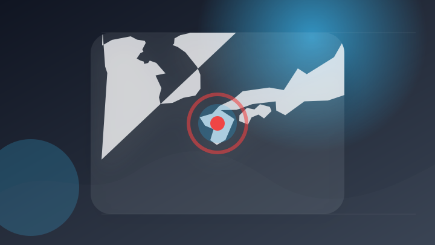
熊本地震の偽画像がSNSで拡散 毎日新聞の写真をAIで加工か
注目ポイント注目度 67点
ＦＰＴ、OpenAIの「Select Partner」に認定されAIソリューションの展開を加速する取り組み
注目ポイント独立2媒体｜注目度 66点
「AIの回答を鵜呑みにしない！」人工知能研究の第一人者・黒川伊保子の最新作『AIのトリセツ』が7月1日発売！人工知能に翻弄されない付き合い方とは！？
「AIの回答を鵜呑みにしない！」人工知能研究の第一人者・黒川伊保子の最新作『AIのトリセツ』が7月1日発売！人工知…
注目ポイント注目度 64点
動画生成AI「MiniMax H3」がApache 2.0ライセンスに移行検討、制限撤廃へ
注目ポイント注目度 64点
Michael Saylor：ChatGPTで1年で150億ドルを荒稼ぎする方法？
注目ポイント注目度 61点
ついに「部署が丸ごとAI」に…NEC、部門長から社員までAIが担う新部署を設置（ビジネス＋IT）
注目ポイント独立2媒体｜注目度 61点
IT業界
6 topics
macOSの「画面共有」に認証バイパスの脆弱性、Appleがセキュリティアップデートを実施／すべてのユーザーに適用を推奨
macOSの「画面共有」に認証バイパスの脆弱性、Appleがセキュリティアップデートを実施／すべてのユーザーに適用…
注目ポイント注目度 70点
北朝鮮ハッカーがAIでサイバー攻撃を高度化
注目ポイント注目度 67点
UAE、エネルギー・航空分野を標的としたサイバー攻撃を阻止
注目ポイント注目度 67点
米国外初の「Google Store 表参道」13日14時開店 限定ノベルティー配布（ITmedia Mobile）
米国外初の「Google Store 表参道」13日14時開店 限定ノベルティー配布（ITmedia Mobile…
注目ポイント独立2媒体｜注目度 66点
Apple Watch、史上最大の変革か：アップルが画面なしバンドを検討、AIがスクリーンの役割を終わらせる？
注目ポイント注目度 61点
Mrs. GREEN APPLE 藤澤涼架が号泣した“じわじわ”の真相を告白「ゼンジン」ライブ舞台裏（TOKYO FM＋）
Mrs. GREEN APPLE 藤澤涼架が号泣した“じわじわ”の真相を告白「ゼンジン」ライブ舞台裏（TOKYO…
注目ポイント注目度 61点
政治
6 topics
熊本地震、住宅再建に最大300万円支給 政府が知事から要望聞き取り
注目ポイント注目度 70点
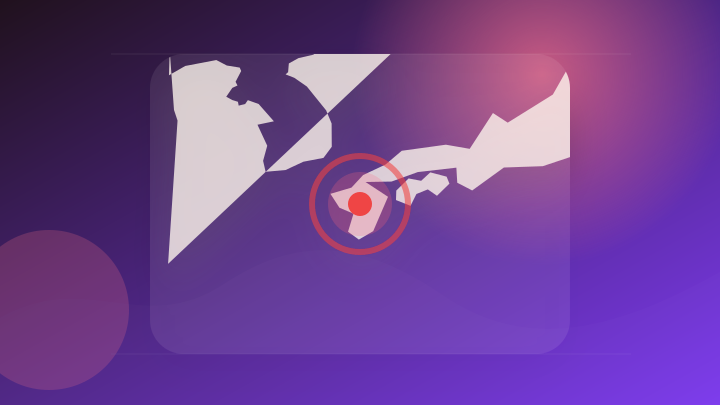
高市首相、夏の外遊見送り 熊本地震対応を優先
注目ポイント注目度 70点
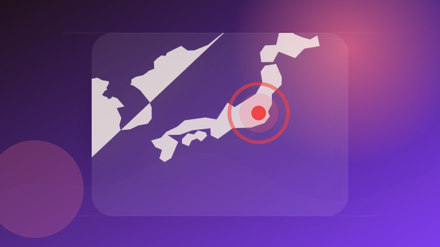
国会議事堂 - 衆院比例復活、基準厳格化 議員定数削減には触れず - 写真・画像(1/1)
国会議事堂 - 衆院比例復活、基準厳格化 議員定数削減には触れず
注目ポイント独立2媒体｜注目度 70点
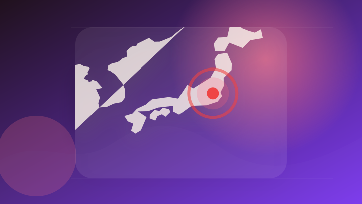
10日の高市首相の動静
注目ポイント注目度 64点
元国会議員の男が銃で県の男性幹部を殺害 車に向け複数発砲 長年の知人同士で金銭トラブルか 犯行後に報道機関に声明 タイ
元国会議員の男が銃で県の男性幹部を殺害 車に向け複数発砲 長年の知人同士で金銭トラブルか 犯行後に報道機関に声明…
注目ポイント注目度 64点
首相、オマーン国王と電話協議 ホルムズ海峡「自由な航行回復を」 [高市早苗首相 自民党総裁]
注目ポイント注目度 64点
社会
6 topics
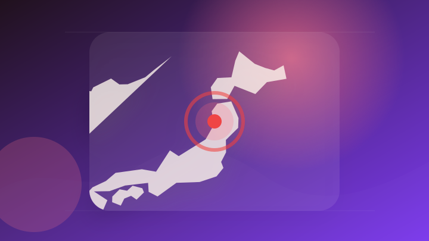
各地で水難事故 秋田・北秋田市ではアユ釣りの70歳男性が川で転倒し流され死亡
注目ポイント注目度 70点
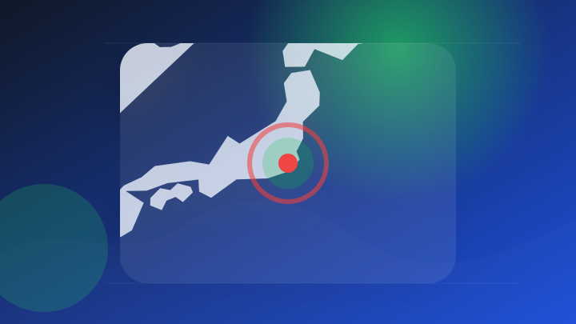
高齢女性遺体発見から2年…54歳の娘逮捕 親子に何が 千葉・いすみ市（2026年8月10日掲載）｜日テレNEWS NNN
高齢女性遺体発見から2年…54歳の娘逮捕 親子に何が 千葉・いすみ市（2026年8月10日掲載）
注目ポイント注目度 70点
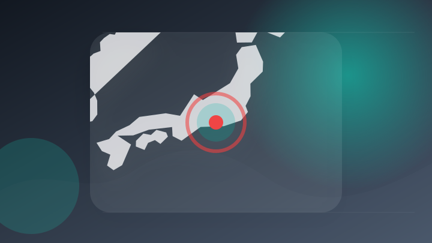
静岡県磐田市の強盗致傷事件で容疑の男3人を逮捕 「トクリュウ」の実行役か
注目ポイント注目度 70点
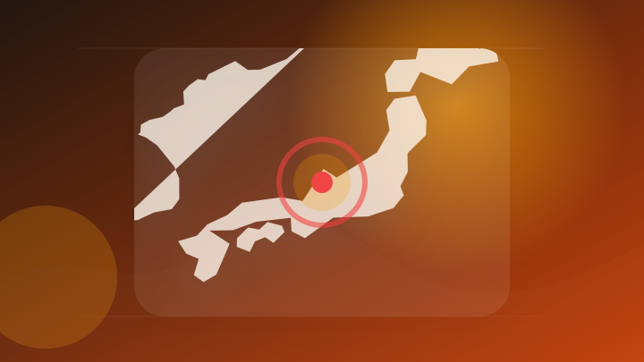
施設で父が殺され同室の男性逮捕、でも「認知症」と…何があったのか [石川県]
注目ポイント注目度 70点
【海難事故】「波が強く戻れないのかと…」中1姉(13)と小3弟(8)が死亡 遊具が波に煽られて親子3人落水 新潟市の角田浜海水浴場
【海難事故】「波が強く戻れないのかと…」中1姉(13)と小3弟(8)が死亡 遊具が波に煽られて親子3人落水 新潟市…
注目ポイント注目度 70点
２年前の高齢女性殺害事件、殺人容疑で５４歳娘を逮捕…「母を殺害していない」と否認
注目ポイント注目度 70点
事件・事故
6 topics
【死亡事故】帰省ラッシュピークの一方…新潟県内“交通事故”相次ぎ3日間で5人死亡 県警は交通指導・取り締まり強化
注目ポイント注目度 70点
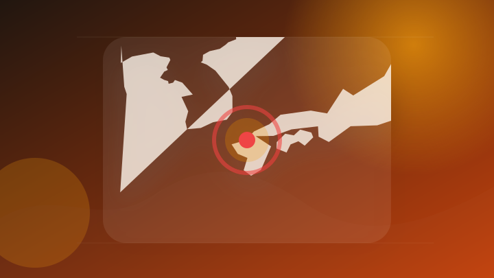
木刀で殴り、けが負わせた疑い 傷害容疑で福岡市早良区の男逮捕
注目ポイント注目度 70点
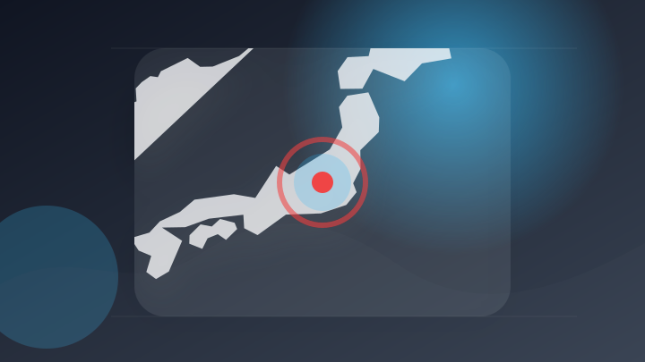
関越道で車に追突し逃走か バス運転手の男逮捕 高校生らを乗せたバスで… 群馬県警
注目ポイント注目度 67点
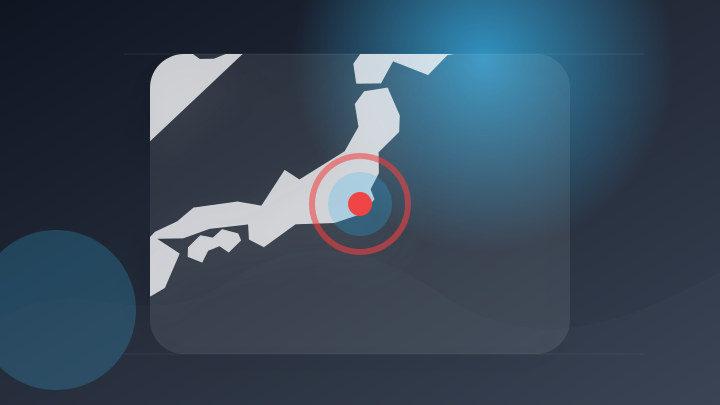
千葉・いすみ市の女性殺害事件 長女を逮捕
注目ポイント注目度 67点
住宅から腕時計や商品券など620万円相当盗む “トクリュウ”の犯行か…３人を再逮捕 札幌市
注目ポイント注目度 67点
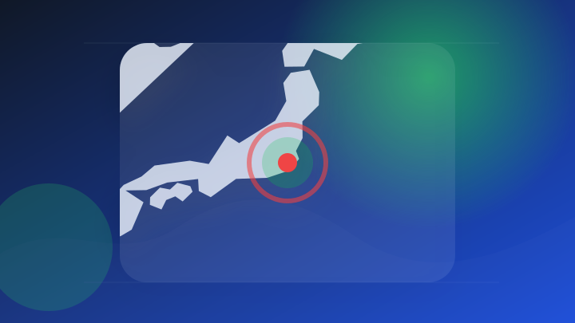
【詳報】８９歳女性絞殺、長女逮捕 発生２年、容疑否認 いすみ署捜査本部
注目ポイント注目度 67点
芸能人の結婚・離婚・交際
2 topics
災害
6 topics

令和８年熊本地震非常災害対策本部会議
注目ポイント注目度 100点
南米コロンビアでM7.4の地震 これまでに20人死亡 建物倒壊や空港閉鎖の情報も
注目ポイント注目度 70点
コロンビアでＭ７・４の地震、少なくとも２０人死亡…複数の建物倒壊し被害拡大する可能性
注目ポイント注目度 70点
南米コロンビアでＭ７．４の地震 建物被害、負傷者も
注目ポイント注目度 70点
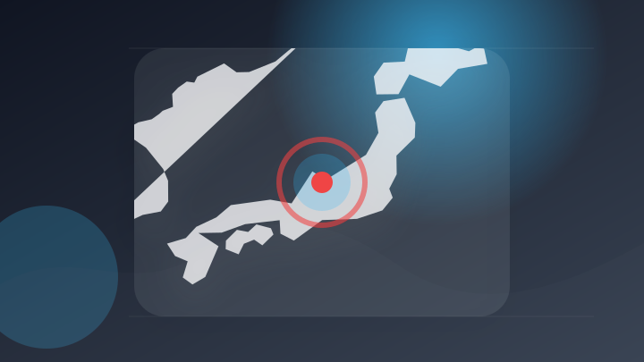
台風１５号 県内最接近はあす夜～あさって午前 土砂災害に警戒を 富山県（2026年8月10日掲載）｜KNB NEWS NNN
台風１５号 県内最接近はあす夜～あさって午前 土砂災害に警戒を 富山県（2026年8月10日掲載）
注目ポイント注目度 70点
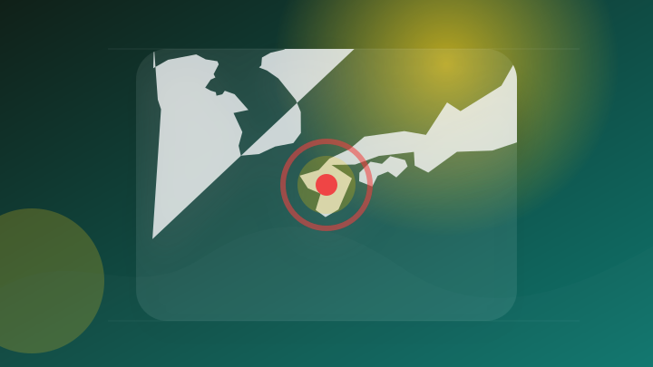
【第５報】令和８年熊本地震にかかる日本赤十字社の対応等について｜災害救護速報（国内）｜おしらせ・最新情報
【第５報】令和８年熊本地震にかかる日本赤十字社の対応等について｜災害救護速報（国内）
注目ポイント注目度 67点
経済
6 topics
日経NEXT 【企業決算を徹底分析／日経平均終値1363円高・米利上げ観測後退で】
注目ポイント独立2媒体｜注目度 95点
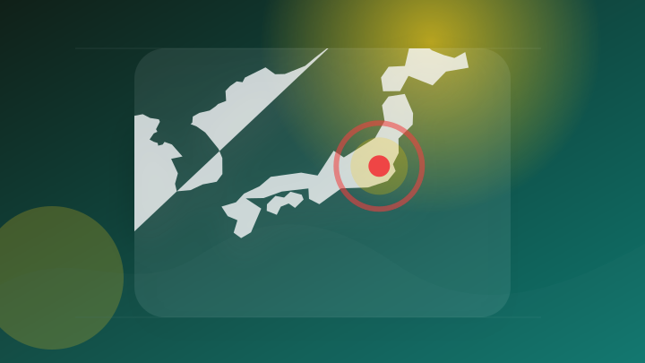
決算:上場企業の稼ぐ力、円安・AI投資が追い風 4〜6月期の純利益7割増
注目ポイント注目度 64点
売上高6.4％増 センコン物流＜四半期決算東北（8月10日）＞
注目ポイント注目度 61点
ダウ・ナスダック・S&P500週間展望：インフレ指標と決算発表に注目 執筆
Investing.com - FX…
注目ポイント注目度 61点
2026年12月期 第2四半期決算説明動画および書き起こし記事公開のお知らせ
注目ポイント注目度 61点
株式会社トーア紡コーポレーション、令和８年12月期 第２四半期（中間期）の決算を発表
注目ポイント注目度 61点
金融
4 topics
【今日の仮想通貨ニュース】米クラリティ法案に慎重論──ビットコインは上昇再開を探る展開
注目ポイント注目度 67点

協調為替介入を受け利上げペースは加速するか 高市政権から9月利上げ容認メッセージが出るかに注目 野村證券・宍戸知暁
注目ポイント注目度 67点
2026年8月10日 暗号資産週間レポート（2026.8.2~2026.8.8）地政学リスク後退・利上げ観測後退でBTCに底堅さ、CLARITY法案採決は9月15日へ｜暗号資産（仮想通貨）・電子決済手段の取引所
2026年8月10日 暗号資産週間レポート（2026.8.2~2026.8.8）地政学リスク後退・利上げ観測後退で…
注目ポイント注目度 67点
日米が協調為替介入、円安抑止には3つの当局対応か 追加介入、日銀利上げ加速、債券市場安定化策 野村證券・後藤祐二朗
注目ポイント注目度 67点
国際
6 topics
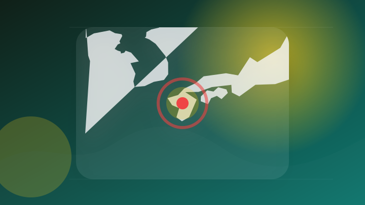
【令和8年熊本地震】林佳龍・外交部長：台湾からの義援金は2億台湾元超
注目ポイント注目度 67点
高市首相 オマーン国王と電話会談“国際社会とも協議を”
注目ポイント注目度 64点
世界で1～7月に発表された新型車の過半数が中国発―独メディア
注目ポイント注目度 61点
セラミックのApple Watchは復活するのか？ 「今年か来年」とGurman氏が報道、最後は2019年のEdition Series 5【海外ニュース】
セラミックのApple Watchは復活するのか？ 「今年か来年」とGurman氏が報道、最後は2019年のEdi…
注目ポイント注目度 61点
東方に集い、未来を約す 中国の首脳外交に見る大国の気風 (2026年8月10日掲載)
注目ポイント独立2媒体｜注目度 61点
オセアニア6か国のジャーナリスト6名を招聘、外交部がその成果を発表
注目ポイントAI・発表｜注目度 61点
ゲーム
3 topics
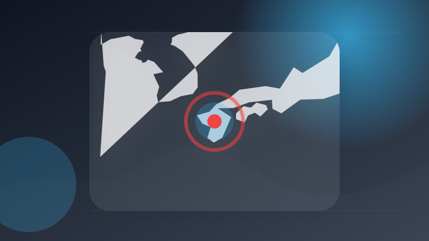
任天堂、熊本地震を受け被災者の製品修理は無償対応（災害救助法適用地域） 義援金5000万円寄付
注目ポイント注目度 67点
ゲームストップ、イーベイ買収提案撤回を検討 提携・合弁模索か＝報道
注目ポイント注目度 64点
GRAPHT、PlayStation™公式ライセンスポップアップストアをJR池袋駅で開催中 夏アパレルやBloodborne新作アイテムが登場
GRAPHT、PlayStation™公式ライセンスポップアップストアをJR池袋駅で開催中 夏アパレルやBlood…
注目ポイント独立2媒体｜注目度 61点
エンタメ
2 topics
音楽フェス「LuckyFes」台風15号接近により4日目開催中止「会場内のフレンズ（来場者）の安全確保が困難と判断」
音楽フェス「LuckyFes」台風15号接近により4日目開催中止「会場内のフレンズ（来場者）の安全確保が困難と判断…
注目ポイント注目度 67点
「映画ちいかわ」原作者・ナガノのロングインタビュー公開！映画の制作エピソードやキャラクター誕生秘話も語る : 映画ニュース
「映画ちいかわ」原作者・ナガノのロングインタビュー公開！映画の制作エピソードやキャラクター誕生秘話も語る : 映画…
注目ポイント独立3媒体｜注目度 65点
ライフ
4 topics
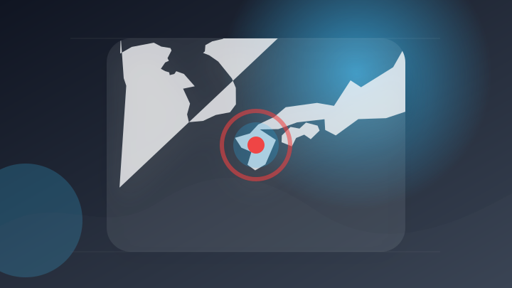
「被災者生活再建支援法を熊本県全域に適用見込み」高市総理が明らかに 支援金最大300万円を支給へ 罹災証明書が必要
注目ポイント独立2媒体｜注目度 64点
最高裁判決を踏まえた生活保護費の追加給付について
注目ポイントAI・裁判｜注目度 61点
地域生活圏形成に取り組む「民間の地域経営主体」の認定を開始（国土交通省）
注目ポイント注目度 61点
鍵盤生活50周年を迎えた日本を代表するキーボード奏者難波弘之。その記念となるコンピレーション盤『難波弘之アンソロジー』CDを8月26日にキングレコードとソニーミュージックより同時発売!!
鍵盤生活50周年を迎えた日本を代表するキーボード奏者難波弘之。その記念となるコンピレーション盤『難波弘之アンソロジ…
注目ポイント注目度 61点